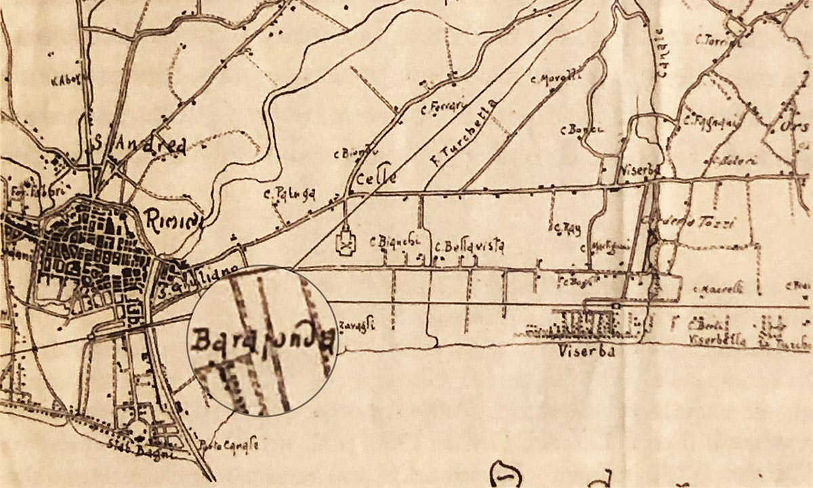
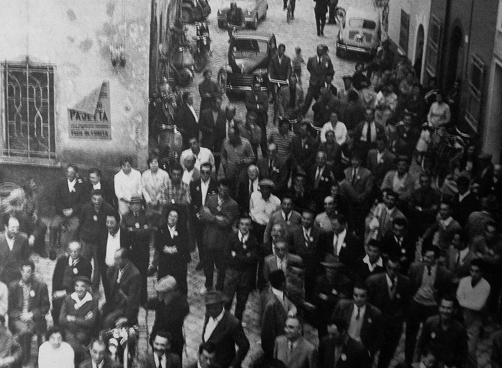
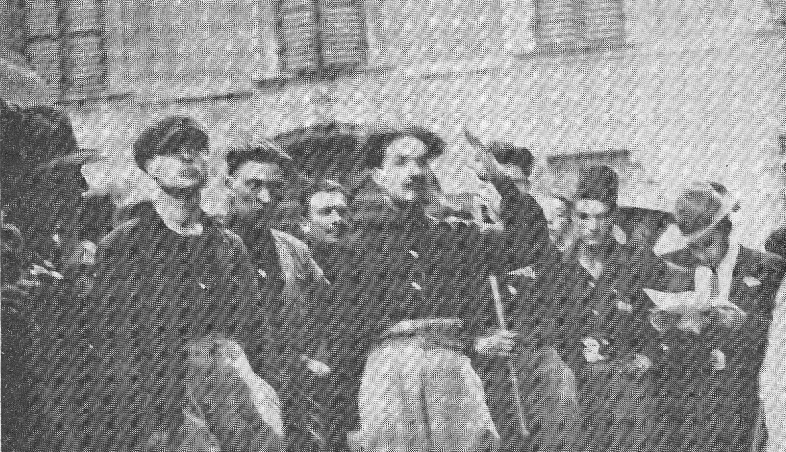
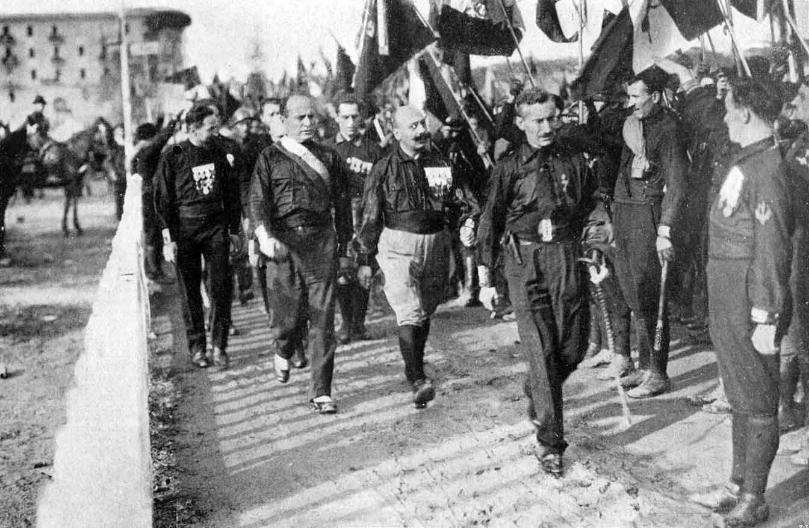

Maggio 1921
Eccidio di Santa Giustina
Il 22 ci fu l’eccidio di Santa Giustina con la morte di 3 persone - Samuelli Ferdinando, Vannoni Pietro, Sarti Salvatore - ed una cinquantina di feriti per mano di fascisti bolognesi.
Un percorso cronologico tra occupazione, bombardamenti, liberazione e memoria della città di Rimini.
Questa linea del tempo raccoglie alcune date importanti legate alla storia del fascismo, dell’antifascismo, della Resistenza e della memoria nel territorio riminese.
Il 22 ci fu l’eccidio di Santa Giustina con la morte di 3 persone - Samuelli Ferdinando, Vannoni Pietro, Sarti Salvatore - ed una cinquantina di feriti per mano di fascisti bolognesi.

I fascisti lanciano una bomba a mano nell’osteria di Giovanni Colombi, abituale ritrovo di socialisti e comunisti, ferendo gravemente il proprietario. Viene bastonato e accoltellato anche Giovanni Renzi.
Primo Paci viene ferito gravemente da squadristi emiliani mentre si reca presso la sede degli agrari a contrattare il rinnovo dei patti colonici.
Lo squadrista Ubaldo Spezzafumo ferisce gravemente il comunista Giovanni Biagini.

Muore Libero Zanardi a seguito delle percosse subite dai fascisti. Nonostante il divieto e le minacce, i suoi funerali si trasformano in una grande manifestazione politica antifascista, alla quale prendono parte migliaia di bolognesi.

Un gruppo di fascisti proveniente da Viserba danneggia il circolo ricreativo socialista e bastona il ferroviere Aurelio Pasquinelli.

Viene incendiata la società ricreativa San Giuliano, di orientamento anarchico, da parte dei fascisti capeggiati da Nelson Morpugo e Unico Sapazzoni, quest’ultimo proveniente da Ferrara.
Scontro a fuoco tra fascisti e anarchici. Il bersaglio dei fascisti è l’anarchico Nello Rossi, che si salva nonostante le gravi ferite riportate. Sono colpite da revolverate anche Lea Stagni, Enrica Lazzari e Olga Bondi, che morirà in seguito all’ospedale di Rimini.

Spedizione squadristica capeggiata da Italo Balbo in tutto il territorio romagnolo. Vengono incendiati la sede della Camera del Lavoro ed il Circolo Comunista. Questa spedizione è considerata la “prova generale” della marcia su Roma.

Le squadre fasciste occupano la sottoprefettura, contro cui vengono puntate due mitragliatrici. Il 29 viene occupata anche la Rocca Malatestiana e vengono liberati i “camerati” prigionieri.
Ludovico Pugliesi s’insedia a quel punto come commissario prefettizio della città. Nelle settimane successive i fascisti completano la conquista del territorio, devastando le sedi dei sodalizi socialisti e popolari.

Il 25 ci fu la caduta della dittatura fascista, Mussolini viene arrestato (tagliatella antifascista in memoria dei Fratelli Cervi).

L’8 ci fu l’annuncio dell’Armistizio fra l’Italia e gli Alleati.

Il 3 i faentini Domenico Gallegati e Franco Tassinari per un tentativo di diserzione vengono fucilati dai fascisti presso la colonia De Orchi di Bellariva.

Il 7 ci fu la Strage di Fragheto (Rimini) con la morte di 30 martiri civili; mentre l’8 al ponte di Casteldelci vengono fucilati dai fascisti 8 Martiri, 7 partigiani ed un civile.

Il 16 vengono impiccati a Rimini, nell’allora piazza Giulio Cesare, i Tre Martiri Mario Capelli, Luigi Nicolò, Adelio Pagliarani.

Il 21 termina la battaglia di Rimini con la ritirata dei tedeschi i greci della Terza Brigata di Montagna, al comando del colonnello Tsakalotos, possono entrare nella città adriatica e liberarla, così per rappresaglia 9 Martiri civili vengono trucidati a Verucchio.
Il 22 Ermeti Giuseppe, del 3º Battaglione SAP di Rimini, viene ucciso da schegge di granata nel corso della ritirata tedesca da Rimini nord.
Il 26 il Sappista Gualtiero Giorgetti guidava una pattuglia neozelandese attraverso i campi minati di Bellaria; scorto un amico che avanza ignaro, si sacrificò per avvisarlo, cadendo sotto il fuoco delle retroguardie tedesche; ricoverato in un ospedale da campo, il giorno dopo morì.

Il 27 ci fu la Liberazione del Lager di Auschwitz da parte dell’Armata Rossa; in tale ricorrenza è istituito il “Giorno della Memoria”. A Rimini la celebrazione avviene al “Parco Caduti nel Lager” di via Madrid.

Il 25 Milano insorge contro il nazifascismo; la data viene ripresa come celebrazione della Liberazione dell’Italia dalla dittatura fascista e l’occupazione nazista.

L’1 viene inaugurato a Rimini il Centro Educativo Italo Svizzero, finanziato dal Soccorso Operaio Svizzero e dietro disperata richiesta delle Autorità cittadine.

L’1 viene consegnata, tramite l’On. Giuseppe Medici, la Medaglia d’oro al Valor Civile alla Città di Rimini.

Muore a Rimini il Partigiano Guglielmo Marconi, già vice-comandante dell’8ª Brigata “Garibaldi”.